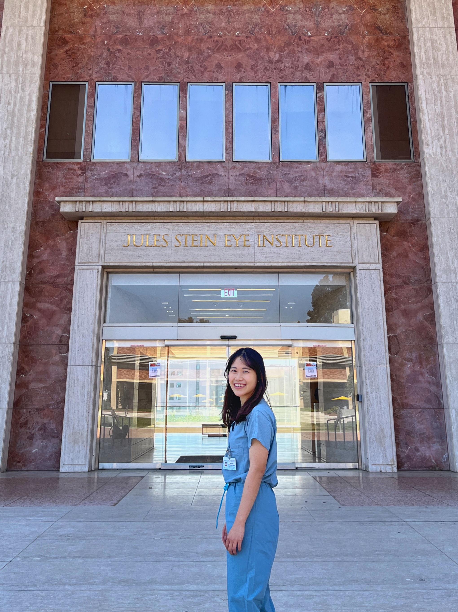
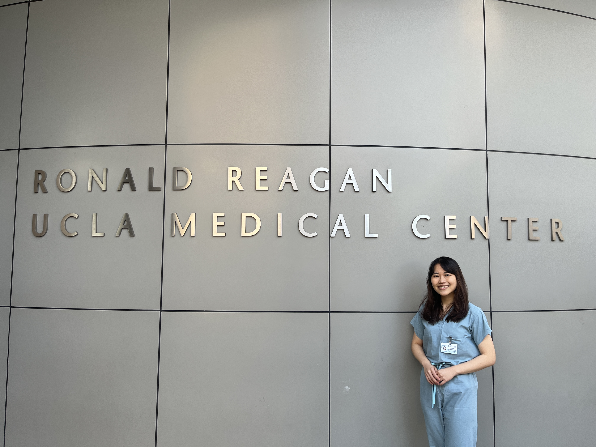
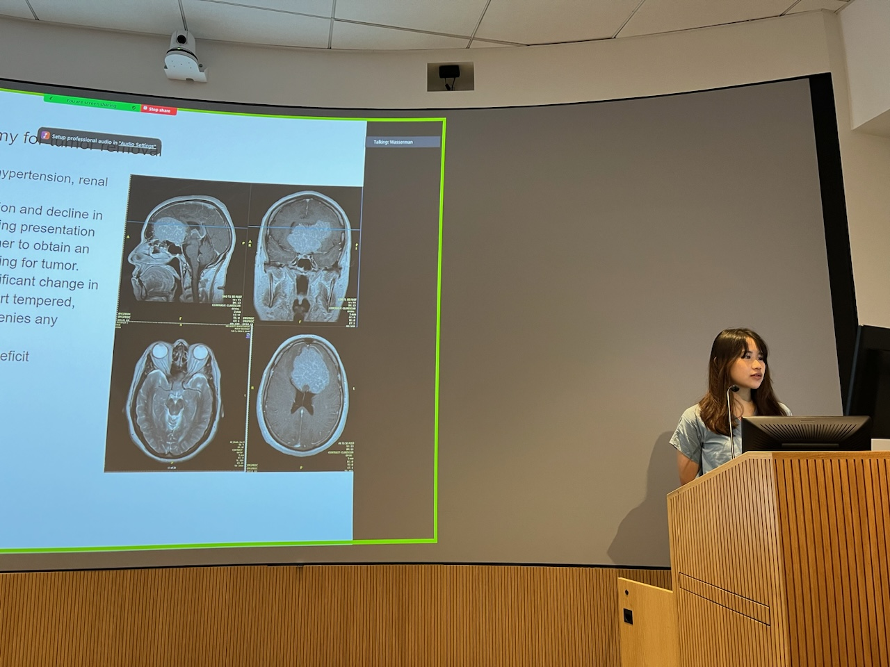
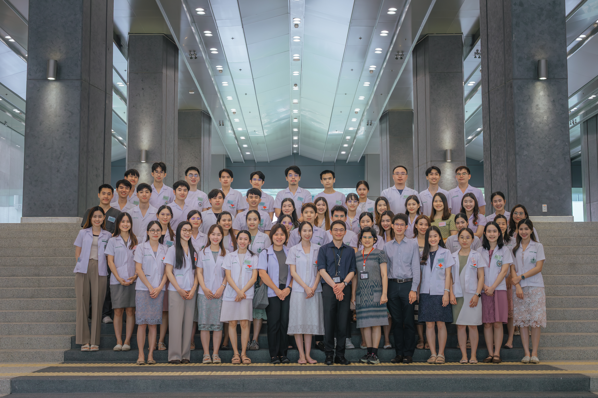
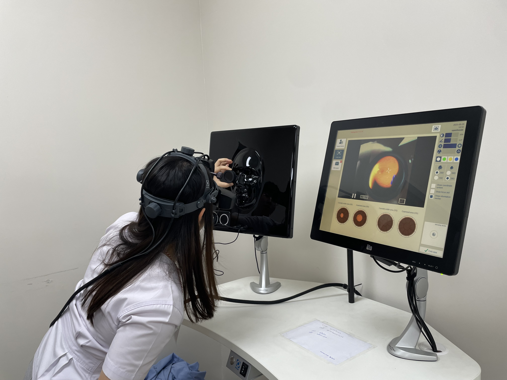
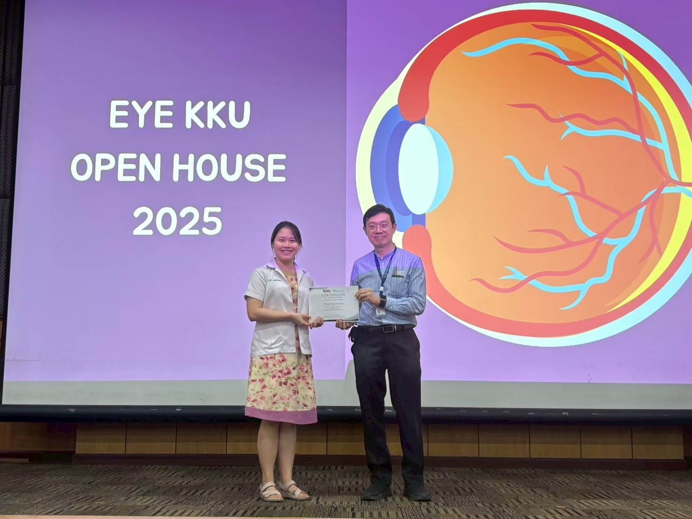
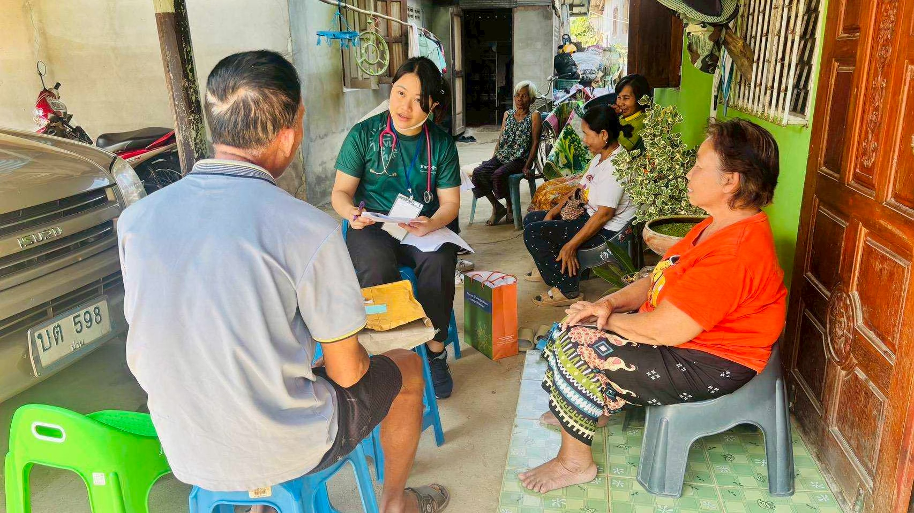
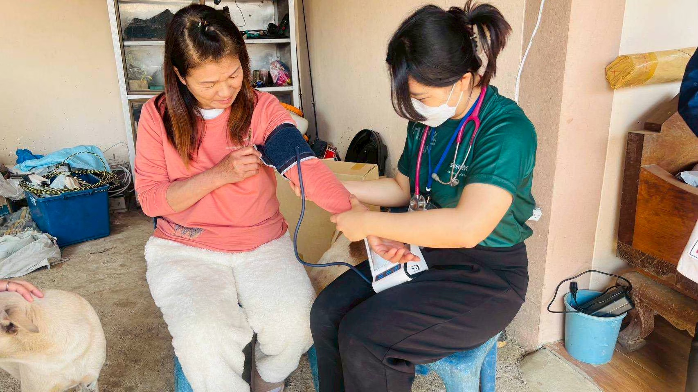
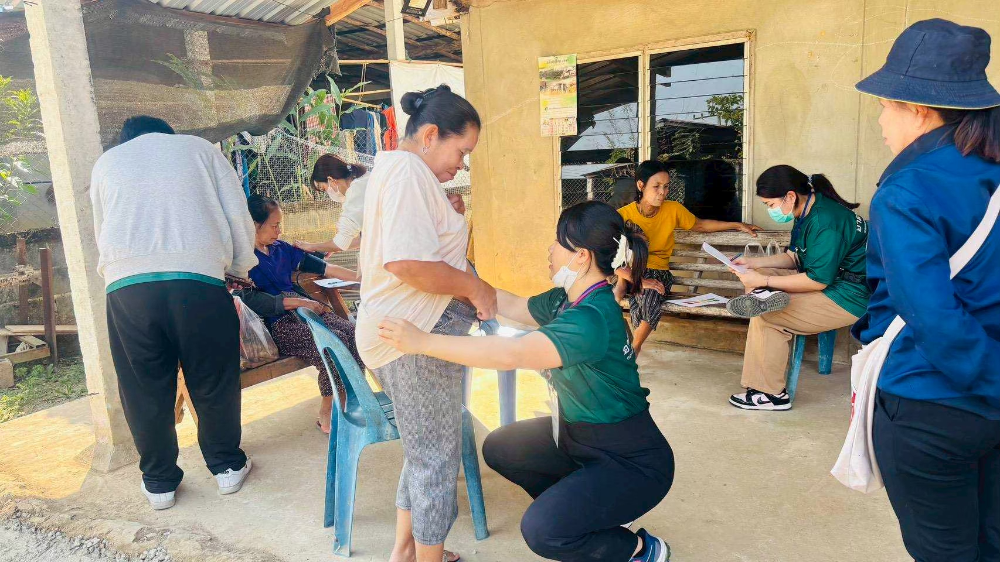

Wilasini Kuptniratsaikul, MD, MSc.
Teaching Assistant, Princess Srisavangavadhana College of Medicine, Chulabhorn Royal Academy (PSMD, CRA)
"An interdisciplinary focus on Clinical Ophthalmology, Ophthalmic Deep Learning, and Healthcare Innovation."
Education & Skills
ประกาศนียบัตรบัณฑิต วิชาระบาดวิทยาคลินิก มหาวิทยาลัยเชียงใหม่
วท.ม. เทคโนโลยีดิจิทัลและปัญญาประดิษฐ์ในระบบสุขภาพ (หลักสูตรสหสาขาวิชา) คณะแพทยศาสตร์ จุฬาลงกรณ์มหาวิทยาลัย
แพทยศาสตรบัณฑิต (เกียรตินิยมอันดับ 1), คณะแพทยศาสตร์ศิริราชพยาบาล มหาวิทยาลัยมหิดล (GPAX 3.72)
มัธยมศึกษาตอนปลาย (แผนการเรียนวิทยาศาสตร์-คณิตศาสตร์) โรงเรียนมหิดลวิทยานุสรณ์ (GPAX 3.95)
Clinical & Ophthalmic Track
Clinical ObservershipsUniversity of California Los Angeles (UCLA), USA
Ophthalmology (3 สัปดาห์) & Neurosurgery clinical rounds, surgical observation, and academic case conferences





คลินิกจักษุ โรงพยาบาลจุฬาภรณ์
ศึกษาดูงานที่ห้องผ่าตัด และคลินิกผู้ป่วยนอก
ภาควิชาจักษุวิทยา รพ.รามาธิบดี และ รพ.ธรรมศาสตร์เฉลิมพระเกียรติ
การศึกษาดูงานคลินิกผู้ป่วยนอก การตรวจด้วยเครื่องมือพิเศษ (Slit-lamp examination) และการสังเกตการผ่าตัด
New Tokyo Hospital, Japan
ศึกษาดูงานทางคลินิกและระบบบริการสุขภาพในประเทศญี่ปุ่น
Teaching Experience in Ophthalmology
สถานที่: คณะแพทยศาสตร์ศรีสวางควัฒน ราชวิทยาลัยจุฬาภรณ์
อาจารย์ผู้ช่วยสอนนักศึกษาแพทย์ชั้นปีที่ 6 ในรายวิชาจักษุวิทยาและโสต ศอ นาสิกวิทยา
Ophthalmology Residency Open House
การเข้าร่วมกิจกรรมเปิดบ้านแนะนำหลักสูตรฝึกอบรมแพทย์ประจำบ้าน ภาควิชาจักษุวิทยา 6 สถาบัน

จุฬาลงกรณ์มหาวิทยาลัย

โรงพยาบาลรามาธิบดี
ศิริราชพยาบาล
รางวัลเย็บดีเด่น

มหาวิทยาลัยธรรมศาสตร์

มหาวิทยาลัยขอนแก่น

โรงพยาบาลราชวิถี
รางวัลตอบคำถาม
Research, Case Reports & AI
ScholarshipDeep Learning for the Diagnosis of Diabetic Retinopathy and Age-Related Macular Degeneration from Retinal Fundus Photographs
Case Breakdown: การพัฒนาและทดสอบโมเดลจำแนกภาพ Fundus เพื่อแยกภาวะเบาหวานขึ้นจอตา (DR) และโรคจุดรับภาพชัดจอตาเสื่อมในผู้สูงอายุ (AMD) ออกจากกัน พร้อมระบบ Grad-CAM แสดงตำแหน่งรอยโรค
Deep learning for the diagnosis of glaucomatous optic neuropathy and non-glaucomatous optic neuropathy from retinal fundus photographs
Case Breakdown: การจำแนกภาพ Fundus เพื่อแยกภาวะขั้วประสาทตาผิดปกติจากต้อหิน (Glaucomatous Optic Neuropathy) ออกจากโรคเส้นประสาทตาชนิดอื่น (Non-glaucomatous)
Delayed Manifestation of Epithelial Basement Membrane Dystrophy After Small-Incision Lenticule Extraction (SMILE): A Case Report
Case Breakdown: พยาธิสภาพหลังทำผ่าตัดแก้ไขสายตา SMILE, การตรวจวินิจฉัยทางกระจกตา และแนวทางการดูแลรักษาทางคลินิก
Incidence, Risk Factors, and Outcomes of Enhancement After Corneal Refractive Surgery: A Systematic Review and Meta-Analysis
Case Breakdown: การวิเคราะห์อุบัติการณ์และปัจจัยเสี่ยงของการผ่าตัดแก้ไขสายตา (Enhancement) หลังการผ่าตัดแก้ไขสายตาผิดปกติ
Health Innovations & Hackathons
Innovator ShowcaseMamaMate (รางวัลชนะเลิศ - Asia-Pacific Global Health Innovation Hackathon 2026)
AI-powered nutrition companion ส่วนต่อขยายแอปพลิเคชันสำหรับ อสม. ในการดูแลแม่และเด็กวัย 0–24 เดือนในชนบท
BrainPlay (รางวัลชนะเลิศ - AI & Robotics Hackathon by MIT Media Lab @ Bangkok 2025)
นวัตกรรม Multimodal AI ชะลอภาวะสมองเสื่อมในรูปแบบเกม
PlaTongo! (รางวัลชมเชย - NTU Hackathon: Innovation Functional Recovery 2026)
อุปกรณ์ช่วยฟื้นฟูองศาการเคลื่อนไหวของรยางค์ส่วนบนในรูปแบบเกม (โปรแกรม Unity)
HerGene (รางวัลรองชนะเลิศอันดับ 2 - Siriraj x MIT Hacking Medicine 2025)
ชุดตรวจการกลายพันธุ์ทางพันธุกรรมสำหรับมะเร็งเต้านมด้วยเทคนิค CRISPR-Cas9 ณ จุดดูแลผู้ป่วย
โครงการความร่วมมือทางวิทยาศาสตร์ระดับนานาชาติ (CERN & Space Camp)
1. Thai-CERN Collaboration Program
ผู้แทนประเทศไทยศึกษาดูงาน ณ เซิร์น (CERN) สมาพันธรัฐสวิส ตามแนวพระราชดำริ สมเด็จพระกนิษฐาธิราชเจ้า กรมสมเด็จพระเทพรัตนราชสุดาฯ สยามบรมราชกุมารี
2. Discover Thailand's Astronaut Scholarship Program (DTAS) & Space Camp
รางวัลชนะเลิศทุนการศึกษาค้นพบนักบินอวกาศไทย และผู้แทนประเทศไทยเข้าร่วม Space Camp ณ U.S. Space & Rocket Center เมือง Huntsville รัฐแอละแบมา สหรัฐอเมริกา
Academic Leadership & Community Outreach
พิธีกรดำเนินรายการ (MC): การประชุมวิชาการประจำปี ครั้งที่ 53 และ 54 ราชวิทยาลัยจักษุแพทย์แห่งประเทศไทย (RCOPT)
การดำเนินรายการการประชุมวิชาการระดับชาติ "Trends and Insights in Our Practice"
หน่วยตรวจตา “รักษ์ตา รู้ทันก่อนพร่าเลือน” งานบริการวิชาการและสังคม ณ เคหะชุมชนหลักสี่
การตรวจคัดกรองสายตาและความผิดปกติทางจักษุวิทยาเบื้องต้นแก่ประชาชนในชุมชน
แพทย์อาสา: ออกตรวจรักษาโรคทั่วไปและส่งเสริมสุขภาพในพื้นที่ห่างไกล
- โครงการอาสาจุฬาภรณ์ ต.บ้านหลวง จ.น่าน: ตรวจโรค และกิจกรรมฐาน Health education




- ออกหน่วย ณ อมก๋อย, แม่ระมาด, แก่งกระจาน: ตรวจโรคเบื้องต้น แจกยา กำจัดเหา เคลือบฟัน
งานบริการสังคม
- ครูอาสาสมัคร ณ โรงเรียนสอนคนตาบอดกรุงเทพ (The Bangkok School for the Blind)
- ครูอาสาสมัครสอนภาษาอังกฤษให้กับนักเรียนขาดโอกาส Saturday School International